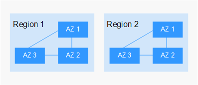

Concept
A region and availability zone (AZ) identify the location of a data center. You can create resources in a specific region and AZ.
- A region is a physical data center, which is completely isolated to improve fault tolerance and stability. The region that is selected during resource creation cannot be changed after the resource is created.
- An AZ is a physical location where resources use independent power supplies and networks. A region contains one or more AZs that are physically isolated but interconnected through internal networks. Because AZs are isolated from each other, any fault that occurs in one AZ will not affect others.
Figure 1 shows the relationship between regions and AZs.
Figure 1 Regions and AZs
Selecting a Region
Select a region closest to your target users for lower network latency and quick access.
Selecting an AZ
When deploying resources, consider your applications' requirements on disaster recovery (DR) and network latency.
- For high DR capability, deploy resources in different AZs within the same region.
- For lower network latency, deploy resources in the same AZ.
Regions and Endpoints
Before you use an API to call resources, specify its region and endpoint. For more details, see Regions and Endpoints.